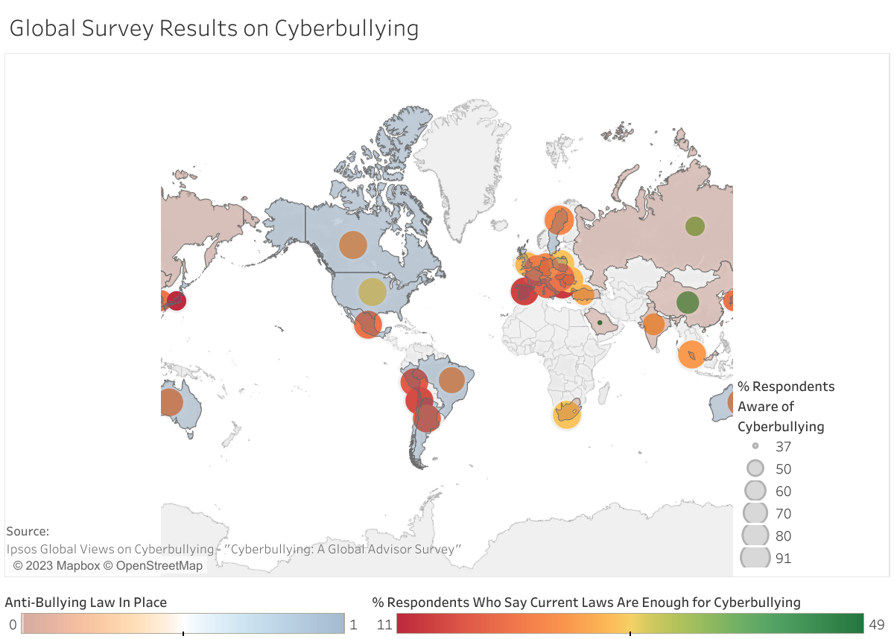
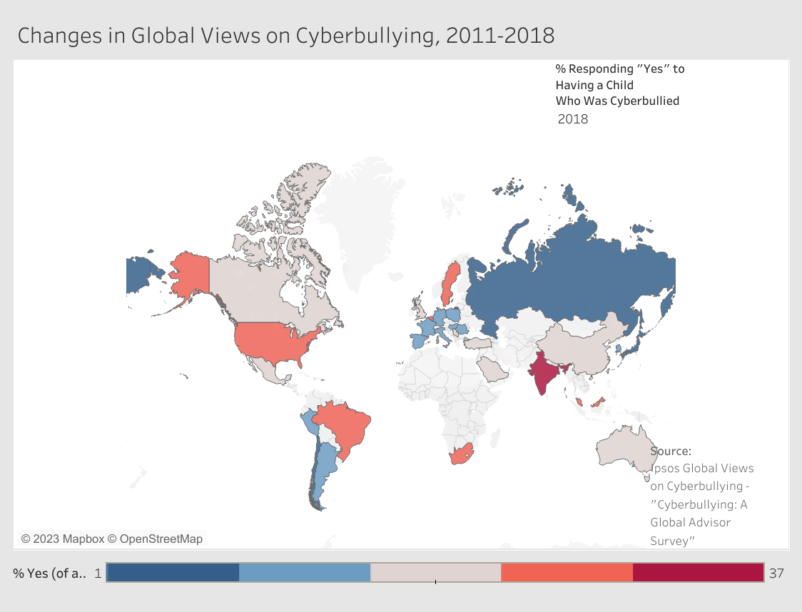

For example, one study used a large national telephone survey (N = 4561) of youth ages 10–17 during 2000, 2005, and 2010 (Jones, Mitchell, & Finkelhor, 2013). The rate of online harassment nearly doubled in a decade, from 6% in 2000 to 11% in 2010. Girls made up 69% of victims, an increase from 2000, and were more likely to report the incident occurred on a social networking site like Facebook.
The reported rates of cyber-bullying in another national survey of 1588 youth ages 10–15 in 2008 were much higher (Ybarra, Mitchell, & Korchmaros, 2011). This study used a national, online survey of randomly selected households. In the last wave of this study, nearly 40% of the sample reported being victimized at some point and nearly 25% of the sample reported perpetrating harassment online.
